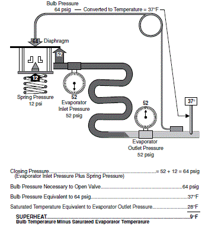

| Model Overview |
Model Overview
This block implements a simple thermostatic expansion valve (TXV). It calculates the massflow that occurs as a result of applying a pressure difference across the valve's inlet and exit ports, as well as control signals from equalizer port pressure and a temperature bulb filled with a sealed refrigerant charge. The purpose of a TXV is to control superheat at the outlet of the evaporator and the physical mechanism by which a TXV achieves this is shown schematically below in Figure 1. The valve stroke is determined from a difference between the "saturation" pressure associated with the bulb temperature located downstream of the evaporator and the summation of the manually controlled spring pressure and the saturation pressure at the evaporator inlet.

Figure 1: TXV Schematic
with Example Calculations
In the model, the spring pressure is a user inputted parameter in the mask and the bulb temperature is filtered with a first order dynamic response to simulate the delay between what the actual evaporator outlet temperature is and what the TXV diaphragm sees. The time constant of the response is a user adjustable parameter. Instead of calculating a full stroke, the model calculates a stroke fraction based off the quotient of the aforementioned pressure differential depicted in Figure 1 and a user adjustable maximum differential pressure required to get the valve to maximum stroke. A user adjustable bleed stroke fraction parameter is available to set a minimum boundary on the stroke fraction that is greater than zero from pressure equalization purposes during periods of system shutdown. The model then calculates a flow coefficient fraction based off a curve between stroke fraction and flow coefficient fraction. The default curve takes the shape of a y = 2x-x2 function where y is the flow coefficient fraction and x is the stroke fraction, but it is user adjustable. The model then multiplies the valve coefficient fraction by the user inputted maximum flow coefficient, which is the valve's flow coefficient with pure liquid at the inlet, two-phase mixture at the outlet, and maximum stroke. This coefficient can be obtained from specification sheets of most commercial valves or from experimental data. The model can then calculate massflow from a standard valve equation assuming an isenthalpic expansion process. The TXV model has custom on/off switching control for simulations in which other upstream devices would restrict flow to one or more parallel low pressure loops. In thermal system simulations the TXV is used as a massflow calculating device.
TXV Block I/O
Inputs to the model are:
Outputs from the model are:
Mask Inputs
The TXV mask has two tabs. The first (Valve) tab contains inputs for valve sizing parameters. The second (Bulb) tab contains inputs for the properties of the bulb.
The values in the Valve tab are:The values in the Bulb tab are: